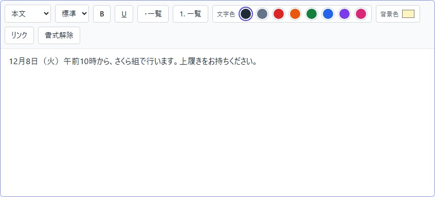
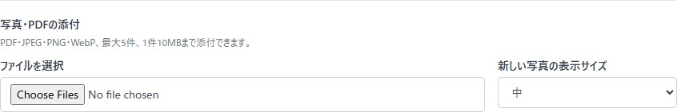
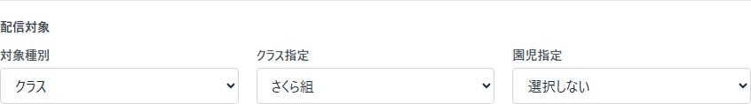
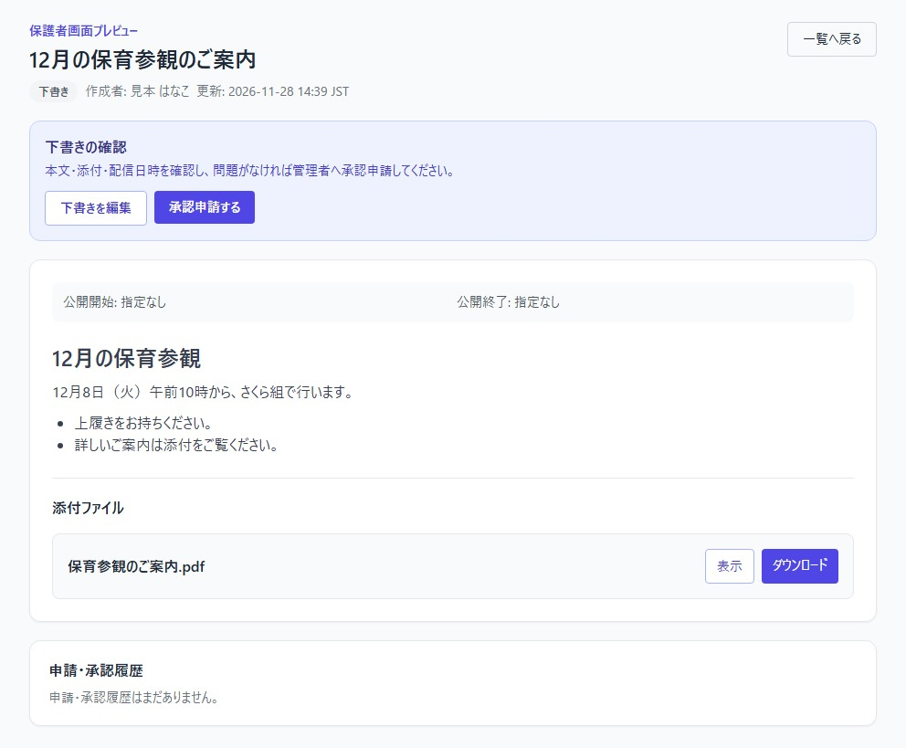

お知らせ・アンケート／作成・管理する職員向け
お知らせの下書きを作成・修正する
タイトル、本文、添付、公開期間、配信対象を入力し、保存した下書きを見直します。
職員画面のメニュー →「お知らせ管理」→「新規作成」
1タイトルと本文を入力する
何のお知らせか分かるタイトルを入れ、本文に日時・場所・持ち物などを入力します。太字、下線、箇条書き、文字色、背景色などで必要な箇所を整えられます。本文を空にする場合は、写真かPDFの添付が必要です。

入力画面の全体を見る


2写真・PDFと公開期間を設定する
添付はPDF・JPEG・PNG・WebPに対応しています。1ファイル10MBまで、合計5ファイルまでです。写真は「新しい画像の表示サイズ」を選びます。ファイルを選んだだけでは保存されません。

- 「状態」は下書きです。「優先度」は通常・重要から選びます。
- 公開開始・公開終了は必要な場合だけ入力します。開始より終了が前にならないよう、日本時間で確認します。
- 添付したPDFの内容そのものも、公開前に開いて見直します。
3配信対象を具体的に選ぶ
「対象種別」で全保護者・クラス・園児のいずれかを選びます。クラスなら「クラス指定」、園児なら「園児指定」で具体的な対象を選びます。

4下書きを保存し、一覧とプレビューを見直す
「下書きを作成」を押すと保存され、プレビューが開きます。タイトル・本文・添付の並びを確認します。「一覧へ戻る」で一覧の配信対象・状態・公開期間を確認します。ここまででは保護者へ公開されません。



作成をやめるときは、保存前に「キャンセル」または「一覧へ戻る」を押します。入力途中の内容は保存されません。保存した下書きを、戻る操作だけで取り消すことはできません。
5下書きを修正する・エラーから戻る
プレビューの「下書きを編集」から開き、変更後に「下書きを保存」を押します。既存の添付は、削除のチェックや画像の表示サイズも確認します。承認待ちや公開中の変更手順は、次のページで説明します。


エラーが出た場合は保存完了ではありません。「前の画面に戻る」で入力内容が残っているか確かめ、原因を直して保存します。タイトルは必須です。本文も添付もない場合は作成できません。